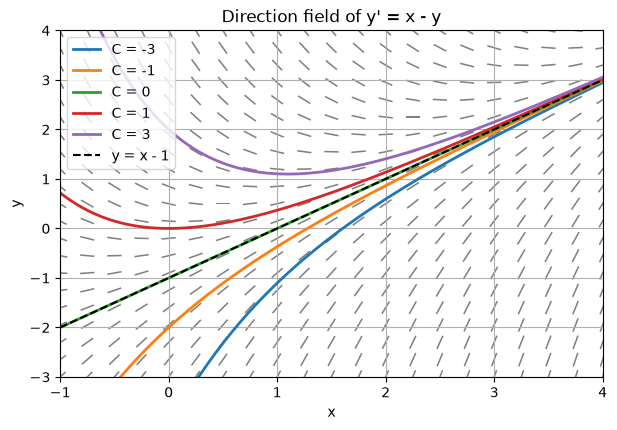
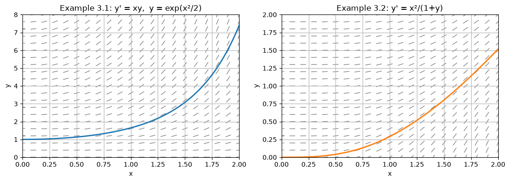
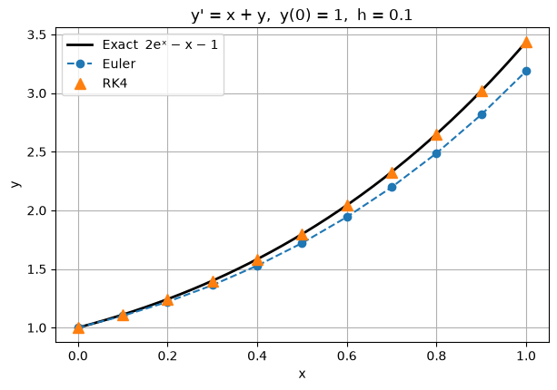
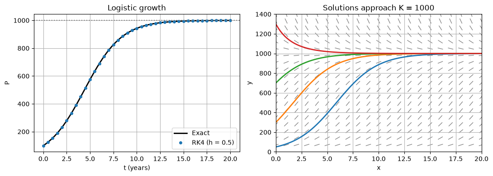

Code
import numpy as np
import matplotlib.pyplot as plt
plt.rcParams["figure.figsize"] = (7, 4.5)
plt.rcParams["axes.grid"] = True
np.set_printoptions(precision=6, suppress=True)Notes with worked examples: analytical methods (separable, linear, exact), direction fields, an introduction to numerical methods, and applications.
Contents 1. Definitions and initial value problems 2. Direction fields 3. Separable equations 4. Linear equations (integrating factor) 5. Exact equations 6. Numerical methods: Euler and RK4 (the full treatment is in the Numerical Methods chapter) 7. Applications: Newton’s law of cooling, logistic growth 8. An equation with no elementary solution 9. Summary 10. Exercises
import numpy as np
import matplotlib.pyplot as plt
plt.rcParams["figure.figsize"] = (7, 4.5)
plt.rcParams["axes.grid"] = True
np.set_printoptions(precision=6, suppress=True)A first-order ordinary differential equation (ODE) relates an unknown function \(y(x)\) to its first derivative:
\[\frac{dy}{dx} = f(x, y).\]
An initial value problem (IVP) adds a starting condition:
\[\frac{dy}{dx} = f(x, y), \qquad y(x_0) = y_0.\]
Existence and uniqueness (Picard’s theorem). If \(f\) and \(\partial f/\partial y\) are continuous in a rectangle containing \((x_0, y_0)\), the IVP has exactly one solution on some interval around \(x_0\).
Example where uniqueness fails: \(y' = 3y^{2/3}\), \(y(0)=0\). Both \(y = 0\) and \(y = x^3\) are solutions, because \(\partial f/\partial y = 2y^{-1/3}\) is not continuous at \(y = 0\).
At every point \((x, y)\) the equation gives the slope \(f(x,y)\) of the solution curve passing through it. Drawing short line segments with these slopes produces a direction (slope) field. Solution curves follow the arrows.
Below is the field for \(y' = x - y\), with a few solution curves. The exact solution is \(y = x - 1 + Ce^{-x}\), so every curve approaches the line \(y = x - 1\).
def direction_field(f, xlim, ylim, n=21, ax=None):
# Draw normalised slope segments of y' = f(x, y).
ax = ax or plt.gca()
X, Y = np.meshgrid(np.linspace(*xlim, n), np.linspace(*ylim, n))
S = f(X, Y)
L = np.sqrt(1 + S**2)
ax.quiver(X, Y, 1 / L, S / L, angles="xy", color="gray",
headwidth=0, headlength=0, headaxislength=0, pivot="middle")
ax.set_xlim(xlim); ax.set_ylim(ylim)
ax.set_xlabel("x"); ax.set_ylabel("y")
return ax
f = lambda x, y: x - y
ax = direction_field(f, (-1, 4), (-3, 4))
x = np.linspace(-1, 4, 200)
for C in [-3, -1, 0, 1, 3]:
ax.plot(x, x - 1 + C * np.exp(-x), lw=2, label=f"C = {C}")
ax.plot(x, x - 1, "k--", label="y = x - 1")
ax.set_title("Direction field of y' = x - y")
ax.legend(loc="upper left");
An equation is separable if it can be written as
\[\frac{dy}{dx} = g(x)\,h(y).\]
Method: separate the variables and integrate both sides:
\[\int \frac{dy}{h(y)} = \int g(x)\,dx + C.\]
Solve \(\dfrac{dy}{dx} = xy\), \(y(0) = 1\).
Check: \(y' = x e^{x^2/2} = xy\). ✓ Numerically, \(y(1) = e^{0.5} \approx 1.648721\).
Solve \(\dfrac{dy}{dx} = \dfrac{x^2}{1 + y}\), \(y(0) = 0\).
At \(x = 1\): \(y = -1 + \sqrt{5/3} \approx 0.290994\).
x = np.linspace(0, 2, 200)
fig, axes = plt.subplots(1, 2, figsize=(11, 4))
direction_field(lambda x, y: x * y, (0, 2), (0, 8), ax=axes[0])
axes[0].plot(x, np.exp(x**2 / 2), "C0", lw=2)
axes[0].set_title("Example 3.1: y' = xy, y = exp(x²/2)")
direction_field(lambda x, y: x**2 / (1 + y), (0, 2), (0, 2), ax=axes[1])
axes[1].plot(x, -1 + np.sqrt(1 + 2 * x**3 / 3), "C1", lw=2)
axes[1].set_title("Example 3.2: y' = x²/(1+y)")
plt.tight_layout()
print("Example 3.1 y(1) =", np.exp(0.5))
print("Example 3.2 y(1) =", -1 + np.sqrt(5 / 3))Example 3.1 y(1) = 1.6487212707001282
Example 3.2 y(1) = 0.2909944487358056
Standard form:
\[\frac{dy}{dx} + P(x)\,y = Q(x).\]
Method (integrating factor):
Solve \(y' + y = x\), \(y(0) = 1\).
\[\boxed{y = x - 1 + 2e^{-x}}\]
Solve \(x y' + 2y = 4x^2\), \(y(1) = 2\), for \(x > 0\).
\[\boxed{y = x^2 + \frac{1}{x^2}}\]
xs = np.array([0.0, 0.5, 1.0, 1.5, 2.0])
print("Example 4.1: y = x - 1 + 2e^(-x)")
print(f"{'x':>6} {'y(x)':>12}")
for xi in xs:
print(f"{xi:6.2f} {xi - 1 + 2 * np.exp(-xi):12.6f}")
xs = np.array([1.0, 1.5, 2.0, 3.0])
print("\nExample 4.2: y = x^2 + 1/x^2")
print(f"{'x':>6} {'y(x)':>12}")
for xi in xs:
print(f"{xi:6.2f} {xi**2 + 1 / xi**2:12.6f}")Example 4.1: y = x - 1 + 2e^(-x)
x y(x)
0.00 1.000000
0.50 0.713061
1.00 0.735759
1.50 0.946260
2.00 1.270671
Example 4.2: y = x^2 + 1/x^2
x y(x)
1.00 2.000000
1.50 2.694444
2.00 4.250000
3.00 9.111111An equation \(M(x,y)\,dx + N(x,y)\,dy = 0\) is exact if
\[\frac{\partial M}{\partial y} = \frac{\partial N}{\partial x}.\]
Then there is a potential function \(F(x,y)\) with \(F_x = M\) and \(F_y = N\), and the solution is \(F(x, y) = C\).
Solve \((2xy + 3)\,dx + (x^2 - 1)\,dy = 0\), \(y(0) = 2\).
\[\boxed{y = \frac{-2 - 3x}{x^2 - 1} = \frac{3x + 2}{1 - x^2}}, \qquad -1 < x < 1.\]
At \(x = 0.5\): \(y = 3.5 / 0.75 \approx 4.666667\).
# Check example 5.1 by verifying that F(x, y(x)) stays equal to C = -2
y = lambda x: (3 * x + 2) / (1 - x**2)
F = lambda x, y: x**2 * y + 3 * x - y
for xi in [0.0, 0.25, 0.5, 0.75]:
print(f"x = {xi:4.2f} y = {y(xi):9.6f} F(x, y) = {F(xi, y(xi)):.6f}")x = 0.00 y = 2.000000 F(x, y) = -2.000000
x = 0.25 y = 2.933333 F(x, y) = -2.000000
x = 0.50 y = 4.666667 F(x, y) = -2.000000
x = 0.75 y = 9.714286 F(x, y) = -2.000000The methods of Sections 3–5 cover only special forms of \(f(x, y)\); most equations, such as the one in Section 8, have no formula for their solution. A numerical method computes approximate values \(y_n \approx y(x_n)\) on a grid \(x_n = x_0 + nh\) with step size \(h\). Two are used in the rest of this notebook:
| Method | Formula | Order (global error) |
|---|---|---|
| Euler | \(y_{n+1} = y_n + h\,f(x_n, y_n)\) | \(O(h)\) |
| Classical Runge–Kutta (RK4) | \(y_{n+1} = y_n + \tfrac{h}{6}(k_1 + 2k_2 + 2k_3 + k_4)\) with \(k_1 = f(x_n, y_n)\), \(k_2 = f(x_n + \tfrac h2, y_n + \tfrac h2 k_1)\), \(k_3 = f(x_n + \tfrac h2, y_n + \tfrac h2 k_2)\), \(k_4 = f(x_n + h, y_n + hk_3)\) | \(O(h^4)\) |
Derivations, error analysis and many more methods and examples are in the chapter Numerical Methods for First-Order ODEs:
def euler(f, x0, y0, h, n):
x, y = np.zeros(n + 1), np.zeros(n + 1)
x[0], y[0] = x0, y0
for i in range(n):
y[i + 1] = y[i] + h * f(x[i], y[i])
x[i + 1] = x[i] + h
return x, y
def rk4(f, x0, y0, h, n):
x, y = np.zeros(n + 1), np.zeros(n + 1)
x[0], y[0] = x0, y0
for i in range(n):
k1 = f(x[i], y[i])
k2 = f(x[i] + h / 2, y[i] + h / 2 * k1)
k3 = f(x[i] + h / 2, y[i] + h / 2 * k2)
k4 = f(x[i] + h, y[i] + h * k3)
y[i + 1] = y[i] + h / 6 * (k1 + 2 * k2 + 2 * k3 + k4)
x[i + 1] = x[i] + h
return x, yExample. \(y' = x + y\), \(y(0) = 1\) is linear, so the method of Section 4 gives its exact solution \(y = 2e^{x} - x - 1\). With \(h = 0.1\):
f = lambda x, y: x + y
exact = lambda x: 2 * np.exp(x) - x - 1
x, ye = euler(f, 0, 1, 0.1, 10)
_, yr = rk4(f, 0, 1, 0.1, 10)
print(f"y(1): exact {exact(1):.8f} Euler {ye[-1]:.8f} (error {exact(1) - ye[-1]:.1e}) RK4 {yr[-1]:.8f} (error {exact(1) - yr[-1]:.1e})")
xf = np.linspace(0, 1, 200)
plt.plot(xf, exact(xf), "k", lw=2, label="Exact 2eˣ − x − 1")
plt.plot(x, ye, "o--", label="Euler")
plt.plot(x, yr, "^", ms=8, label="RK4")
plt.title("y' = x + y, y(0) = 1, h = 0.1")
plt.xlabel("x"); plt.ylabel("y"); plt.legend();y(1): exact 3.43656366 Euler 3.18748492 (error 2.5e-01) RK4 3.43655949 (error 4.2e-06)
The rate of temperature change is proportional to the difference from the surroundings:
\[\frac{dT}{dt} = -k\,(T - T_a).\]
Problem. A cup of coffee at \(90^\circ\)C is placed in a \(20^\circ\)C room with \(k = 0.1\ \text{min}^{-1}\). (a) What is its temperature after 10 minutes? (b) When does it reach \(30^\circ\)C?
The equation is separable (and linear): \(T(t) = T_a + (T_0 - T_a)e^{-kt} = 20 + 70e^{-0.1t}\).
\(T(10) = 20 + 70e^{-1} \approx 20 + 25.752 = 45.75^\circ\)C.
\(20 + 70e^{-0.1t} = 30 \Rightarrow e^{-0.1t} = 1/7 \Rightarrow t = 10\ln 7 \approx 19.46\) min.
k, Ta, T0 = 0.1, 20.0, 90.0
cool = lambda t, T: -k * (T - Ta)
T_exact = lambda t: Ta + (T0 - Ta) * np.exp(-k * t)
t, T_rk = rk4(cool, 0, T0, 1.0, 40) # h = 1 minute
_, T_eu = euler(cool, 0, T0, 1.0, 40)
print(f"T(10) exact = {T_exact(10):.4f} RK4 = {T_rk[10]:.4f} Euler = {T_eu[10]:.4f}")
print(f"time to reach 30 °C = 10 ln 7 = {10 * np.log(7):.4f} min")
tf = np.linspace(0, 40, 200)
plt.plot(tf, T_exact(tf), "k", lw=2, label="Exact")
plt.plot(t, T_eu, ".", label="Euler (h = 1)")
plt.axhline(30, color="gray", ls=":"); plt.axvline(10 * np.log(7), color="gray", ls=":")
plt.xlabel("t (min)"); plt.ylabel("T (°C)"); plt.title("Newton's law of cooling")
plt.legend();T(10) exact = 45.7516 RK4 = 45.7516 Euler = 44.4075
time to reach 30 °C = 10 ln 7 = 19.4591 min
\[\frac{dP}{dt} = rP\left(1 - \frac{P}{K}\right),\]
where \(r\) is the growth rate and \(K\) is the carrying capacity. Separating variables with partial fractions gives
\[P(t) = \frac{K}{1 + \left(\dfrac{K - P_0}{P_0}\right)e^{-rt}}.\]
Problem. \(r = 0.5\) per year, \(K = 1000\), \(P_0 = 100\). Find \(P(5)\).
\[P(5) = \frac{1000}{1 + 9e^{-2.5}} = \frac{1000}{1 + 9(0.082085)} = \frac{1000}{1.738765} \approx 575.1.\]
The equilibria are \(P = 0\) (unstable) and \(P = K\) (stable). Growth is fastest at \(P = K/2\).
r, K, P0 = 0.5, 1000.0, 100.0
logistic = lambda t, P: r * P * (1 - P / K)
P_exact = lambda t: K / (1 + (K - P0) / P0 * np.exp(-r * t))
t, P_rk = rk4(logistic, 0, P0, 0.5, 40)
print(f"P(5) exact = {P_exact(5):.4f} RK4 (h=0.5) = {P_rk[10]:.4f}")
fig, axes = plt.subplots(1, 2, figsize=(11, 4))
tf = np.linspace(0, 20, 200)
axes[0].plot(tf, P_exact(tf), "k", lw=2, label="Exact")
axes[0].plot(t, P_rk, "o", ms=4, label="RK4 (h = 0.5)")
axes[0].axhline(K, color="gray", ls=":"); axes[0].set_title("Logistic growth")
axes[0].set_xlabel("t (years)"); axes[0].set_ylabel("P"); axes[0].legend()
direction_field(logistic, (0, 20), (0, 1400), ax=axes[1])
for p0 in [50, 300, 700, 1300]:
_, Pp = rk4(logistic, 0, p0, 0.1, 200)
axes[1].plot(np.linspace(0, 20, 201), Pp, lw=2)
axes[1].set_title("Solutions approach K = 1000")
plt.tight_layout()P(5) exact = 575.1209 RK4 (h=0.5) = 575.1165
The Riccati equation
\[y' = x^2 + y^2, \qquad y(0) = 0\]
cannot be solved in terms of elementary functions. We estimate \(y(1)\) with RK4 and check the result by repeatedly halving \(h\). When the digits stop changing, the answer has converged.
g = lambda x, y: x**2 + y**2
prev = None
print(f"{'h':>8} {'y(1) RK4':>16} {'change':>12}")
for h in [0.2, 0.1, 0.05, 0.025, 0.0125]:
_, y = rk4(g, 0, 0, h, round(1 / h))
change = f"{abs(y[-1] - prev):12.2e}" if prev is not None else ""
print(f"{h:8.4f} {y[-1]:16.10f} {change}")
prev = y[-1] h y(1) RK4 change
0.2000 0.3502575491
0.1000 0.3502337418 2.38e-05
0.0500 0.3502319725 1.77e-06
0.0250 0.3502318526 1.20e-07
0.0125 0.3502318448 7.79e-09The last two values agree to about 8 significant figures: \(y(1) \approx 0.3502318\). The solution grows quickly afterwards and blows up near \(x \approx 2.003\), a reminder that solutions of nonlinear ODEs can exist only on a finite interval.
| Type | Form | Method |
|---|---|---|
| Separable | \(y' = g(x)h(y)\) | \(\int dy/h = \int g\,dx\) |
| Linear | \(y' + P y = Q\) | Integrating factor \(\mu = e^{\int P}\) |
| Exact | \(M\,dx + N\,dy = 0\), \(M_y = N_x\) | Find \(F\) with \(F_x = M\), \(F_y = N\); then \(F = C\) |
| Anything else | \(y' = f(x,y)\) | Numerical: Euler (order 1), RK4 (order 4); see Numerical Methods |
Answers
q = lambda x, y: -2 * x * y
_, y_eu = euler(q, 0, 1, 0.25, 4)
_, y_rk = rk4(q, 0, 1, 0.25, 4)
ex = np.exp(-1)
print(f"Exact y(1) = {ex:.6f}")
print(f"Euler y(1) = {y_eu[-1]:.6f} error = {abs(y_eu[-1] - ex):.2e}")
print(f"RK4 y(1) = {y_rk[-1]:.6f} error = {abs(y_rk[-1] - ex):.2e}")
print(f"Error ratio Euler / RK4 ≈ {abs(y_eu[-1] - ex) / abs(y_rk[-1] - ex):.0f}")Exact y(1) = 0.367879
Euler y(1) = 0.410156 error = 4.23e-02
RK4 y(1) = 0.367934 error = 5.51e-05
Error ratio Euler / RK4 ≈ 768